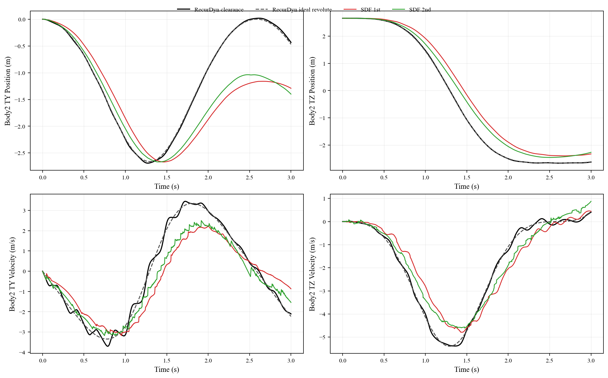
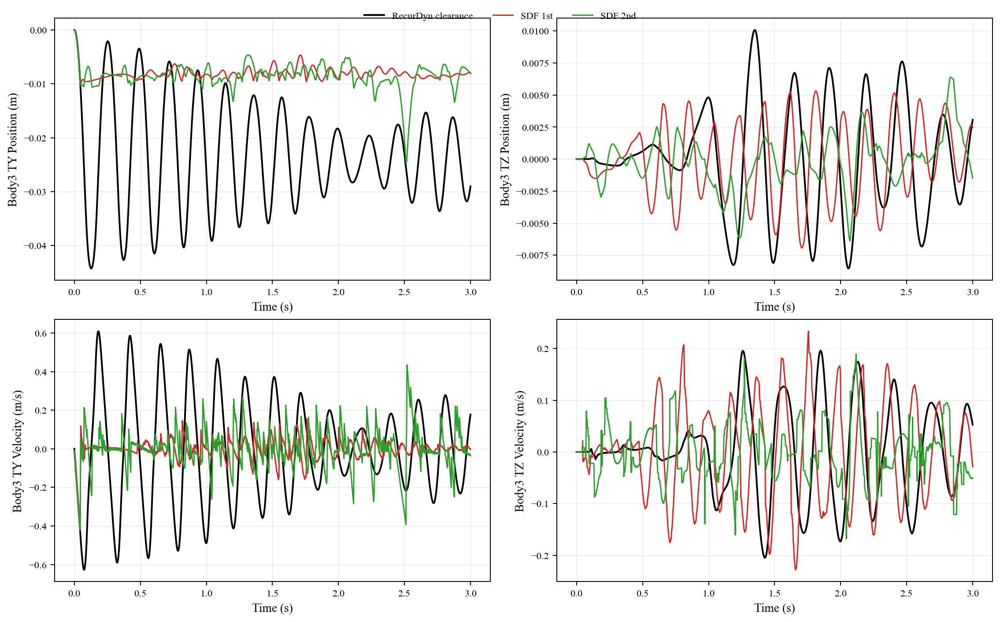
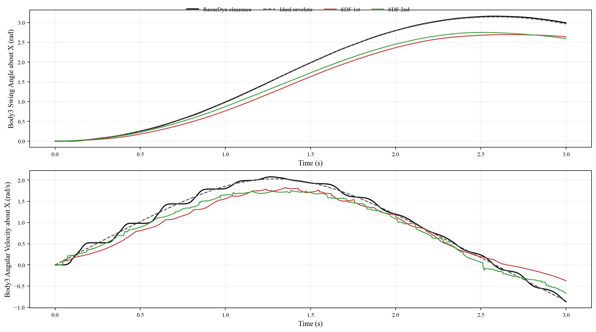

This report compares the extracted RecurDyn revolute-clearance model under the current project implementations
(mesh, sdf_1st, and sdf_2nd) against the reference clearance trajectories
(body2.csv, body3.csv) and the ideal revolute-joint reference
(body2_ideal.csv).
assets/rev_joint_clearance/models/body1_subtract1.objassets/rev_joint_clearance/models/body3_cylinder1.obj
Body2 is the payload body rigidly attached to the clearance pin. The plot overlays the current project trajectories with both the RecurDyn clearance simulation and the ideal revolute-joint reference.

Body3 is the clearance pin. RecurDyn provides the clearance trajectory for this body; there is no separate ideal body3 reference because the ideal case replaces the clearance joint with a pure revolute joint.

Because Body2 is rigidly attached to Body3, the relative vector from Body3 to Body2.CM defines the effective swing angle of the pin-payload assembly. The curves below compare that inferred rotation from RecurDyn with the directly exported project-side angular response.

| Method | TY pos RMSE | TZ pos RMSE | TY vel RMSE | TZ vel RMSE |
|---|---|---|---|---|
| Mesh | 10.199300 | 3.285512 | 11.658378 | 2.453643 |
| SDF 1st | 0.709196 | 0.503403 | 0.954866 | 0.688040 |
| SDF 2nd | 0.616754 | 0.358543 | 0.703283 | 0.533685 |
| Method | TY pos RMSE | TZ pos RMSE | TY vel RMSE | TZ vel RMSE |
|---|---|---|---|---|
| Mesh | 10.190829 | 3.286067 | 11.629283 | 2.442094 |
| SDF 1st | 0.703957 | 0.507422 | 0.940515 | 0.686154 |
| SDF 2nd | 0.610955 | 0.361616 | 0.673387 | 0.524754 |
| Method | TY pos RMSE | TZ pos RMSE | TY vel RMSE | TZ vel RMSE |
|---|---|---|---|---|
| Mesh | 9.446047 | 0.125548 | 10.533225 | 0.120209 |
| SDF 1st | 0.017846 | 0.005138 | 0.271273 | 0.128814 |
| SDF 2nd | 0.017581 | 0.004120 | 0.287770 | 0.091517 |
| Method | Angle RMSE | Angular vel RMSE |
|---|---|---|
| Mesh | 1.683977 | 1.105517 |
| SDF 1st | 0.332057 | 0.230142 |
| SDF 2nd | 0.272790 | 0.183134 |
| Method | Angle RMSE | Angular vel RMSE |
|---|---|---|
| Mesh | 1.677902 | 1.099250 |
| SDF 1st | 0.327180 | 0.225783 |
| SDF 2nd | 0.266550 | 0.169501 |
The position comparison shows that Body3 already tracks the RecurDyn clearance orbit much more closely than Body2. The added rotation-response comparison helps isolate the remaining source of Body2 error: if the effective swing angle of the Body3-Body2 assembly diverges from the RecurDyn clearance rotation, then Body2.CM will be displaced even when the Body3 translation itself is already close.
This means the benchmark is executable end-to-end and the extracted OBJ assets are usable, but the remaining mismatch should now be interpreted primarily as a rotational-response mismatch of the pin-payload assembly rather than a simple output-point or mesh-registration error.